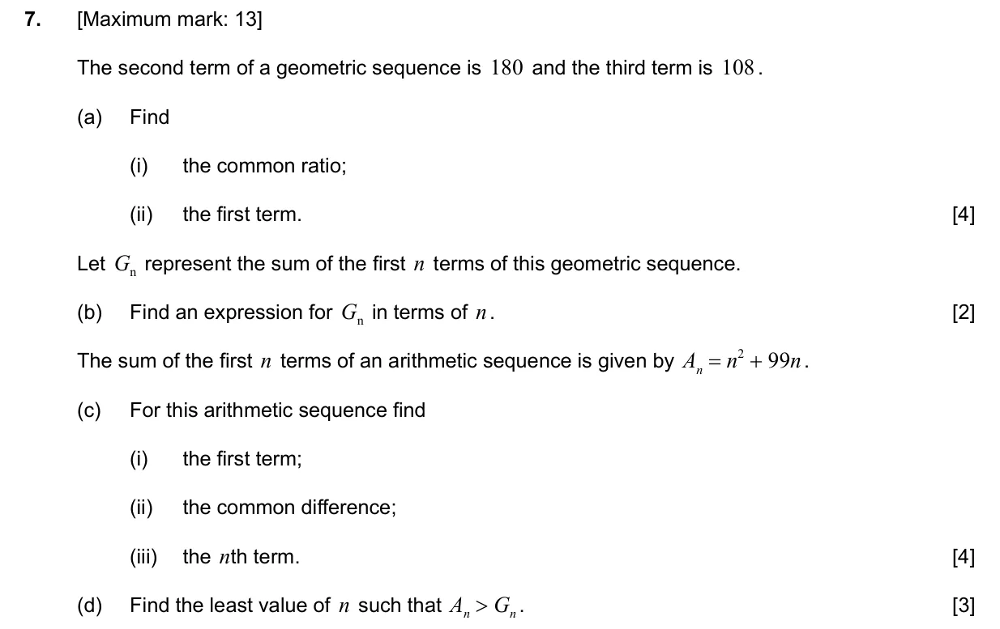
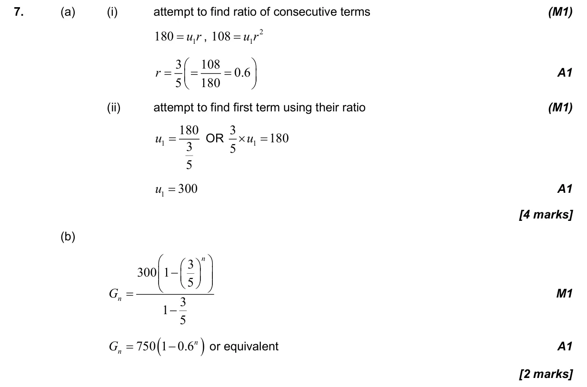
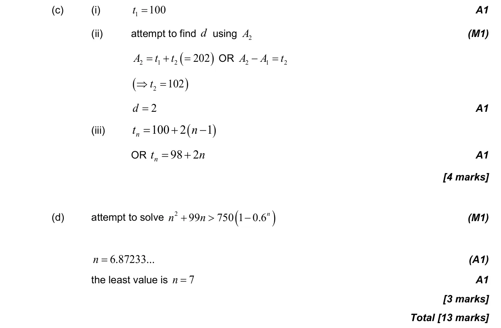

1.3 Geometric sequences and series1.2 Arithmetic sequences and series2.10 Solving equations graphically and analytically
Question

Markscheme


13 marks - May P2 TZ2 - Section B - Mathematics: Analysis and Approaches SL


